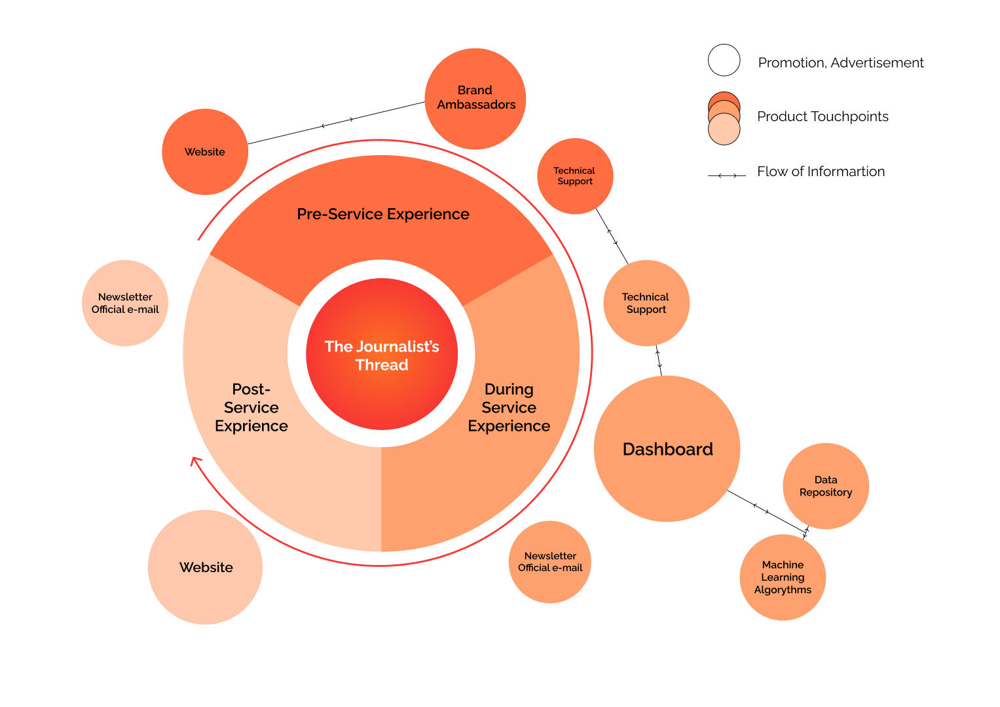

DESCRIPTION
The Journalist’s Thread is a machine learning based tool that support decision making during the newsgathering process. The service was developed in collaboration with journalists and embodies journalistic values, turning the average journalist into a Data Journalist without having to worry about algorythmic bias.
À
JOURNALIST'S T.
[2022]
SKILLS AND TOOLS
UX Research
AI Envisioning
UI Prototyping, Figma
Usability Testing
Branding
TEAM
Me!
Matteo Paoli
Marco De Cristofaro
Andrea Simeone
Elie Barakat
LINK/FILES
Prototype
Technical Report
Website
Youtube Video
METHODOLOGY
The project started with the brief to create an AI based tool for journalists. The first step for the team was to research the main stakeholder and their needs, followed by a research on how to approach the main features through AI and Machine Learning. Then through an Agile methodology the team approached the interface design phase in different sprints of wireframes and testing followed by a validation phase with experts and the stakeholders.
AI MODEL
The system employes different machine learning tecniques such as: Clustering, Keyword Extraction, Sentiment Analysis and Summarization; to organize and cluster data scraped from different media such as articles, social media posts and audiovisual content, which will be then visualized in the dashboard.
INTERFACE DESIGN
In three sprints lasting one week each, the team developed and tested the dashboard, finishing it off with a design system
USER JOURNEY AND SERVICE BLUEPRINT

TOUCHPOINTS AND STAKEHOLDERS
